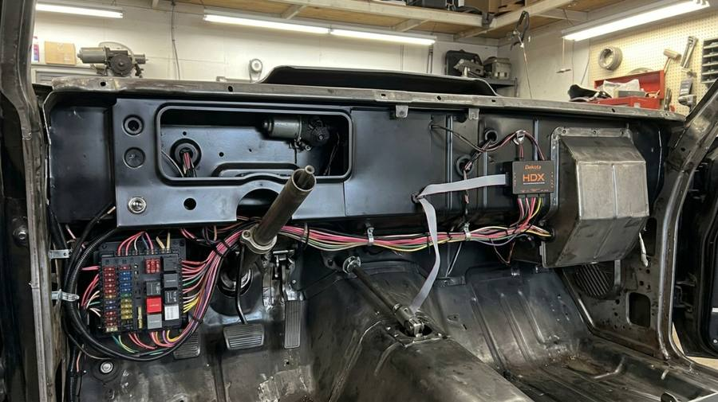
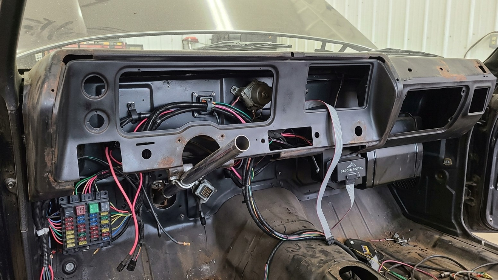

HDX-70C-CVL Build Dashboard — Tap a gauge to navigate
0%
Build Progress
0/0
Parts Received
$0
Total Spent
Search
Budget
Help
Specs
Type to search across all phases, wiring, specs, and more
SS Dash Face — HDX-70C-CVL Gauge Layout
Tap any gauge to see installation details, wiring, and calibration notes.
Tachometer + Left Message Center
HDX Analog SweepTFT Display
Signal Source: Coil negative (-) terminal, or HEI TACH terminal on distributor cap
Setup: Set cylinder count to 8 in HDX menu (396/454 big block)
TFT Message Center: The small digital display below the needle shows configurable readouts — RPM digital, gear indicator, voltage, or trip data.
The tach signal wire runs from the Control Box to the ignition coil. On HEI distributors, use the dedicated TACH terminal on the cap — do NOT tap the coil primary.
Speedometer + Right Message Center
HDX Analog SweepTFT Display
Signal Source: 3-wire pulse speed sensor (replaces mechanical cable)
Calibration: Enter tire diameter + axle ratio, or use GPS auto-calibration mode
TFT Message Center: Digital speed, odometer, trip odometer, or clock.
The speed sensor cable-drive adapter threads into the transmission tailshaft where the mechanical cable used to connect. Route the 3 wires (signal, power, ground) to the Control Box.
Location: Engine block oil gallery port (where factory sender was)
Wire
Color
Connection
Signal
White
To HDX Control Box
Power
Red
5V DC from Control Box
Ground
Black
Engine block / chassis
This is a 3-wire sender — NOT the old single-wire GM type. Do not reuse the factory sender. Use Teflon tape, hand-tight + 1/4 turn only.
Part number: SEN-01-5 comes included in the HDX kit. If ordering separately (replacement), the standalone part number is SEN-03-8. Same sender, different kit packaging.
Water Temperature
HDX Analog Sweep
Sender: 2-wire, 1/8" NPT (may need reducing bushing for GM ports)
Location: Intake manifold water jacket port
Wiring: Signal wire to Control Box; grounds through engine block
GM intake manifolds often have 3/8" or 1/2" NPT ports. You will likely need a 3/8" to 1/8" NPT reducing bushing plus a 45 or 90-degree elbow to position the sender correctly. Sender part: SEN-04-5. Use Teflon tape on all threads.
Fuel Level
HDX Analog SweepUses Existing Sender
Sender: Factory tank sending unit (0-90 ohm range for 1972 GM)
Wiring: Signal wire from tank sender to Control Box
Calibration: Must calibrate empty/full points through HDX menu:
Drive until tank is near empty → set Empty point
Fill tank completely → set Full point
HDX interpolates everything between
Voltmeter
HDX Analog SweepInternal — No Sender
Signal: Reads system voltage directly from the power connections to the Control Box
No external sender needed. If voltage reads low, check your battery, alternator output, and ground connections before suspecting the gauge.
Ammeter vs Voltmeter: The factory 1972 Chevelle used an ammeter. The HDX system replaces it with a voltmeter. If your car still has the old ammeter bypass wire (heavy-gauge wire through the firewall), disconnect and insulate it — it's not needed and can interfere with the HDX voltmeter readings.
Wiring Guide
Follow these phases in order. Each shows every connection you make, step by step.
2
Route All Harnesses
8 steps — Route, tag, test continuity, install fuse panel — NO connections yet
►
KEY RULE: Route ALL harnesses BEFORE connecting anything. Tag every connector with masking tape + marker so you know what goes where.
1
Lay out entire harness on a clean floor
Unbox everything and identify each piece before routing:
AAW Dash Kit
Bag G — main dash harness
AAW Rear Body Harness
Bag M — fuel sender + tail lights
AAW Engine Kit
Bag J — engine bay harness
AAW Fuse Panel
500707 — 18-fuse inline panel
HDX Sender Sub-harnesses
3 × 10ft wires (oil, temp, speed)
HDX Ribbon Cable
Control Box to gauge cluster
2
Label EVERY connector with masking tape + marker
15-20 connectors total. Write the destination on each: "Headlight Switch," "Wiper Motor," "Radio," "Ignition," etc. You'll thank yourself in Phase 4.
3
Feed dash harness (Bag G) through firewall grommet
Main firewall grommet, driver side, ~6" left of center. Leave 18" of slack behind dash.
4
Connect bulkhead connector at firewall
Large multi-pin keyed connector — aligns one way only. Push firmly until retaining clip snaps. Tug-test. Apply dielectric grease to exterior. Verify weather seal gasket is intact.
5
Route HDX sender sub-harnesses (3 pieces)
Oil, temp, and speed — 3 × 10ft wires. Route through firewall grommet alongside the main harness. Leave 6-8" slack where wires cross from body to engine for engine movement.
6
Route rear body harness (Bag M) and engine harness (Bag J)
Rear (Bag M): Under carpet path along driver-side rocker panel to rear. Carries fuel sender signal (tan wire) and tail/brake lights.
Engine (Bag J): Leave slack for engine movement. Route away from exhaust manifold. Zip-tie to existing brackets every 12".
7
Test continuity on each circuit with multimeter
Set multimeter to continuity/ohms. Test each labeled wire pair end-to-end. Check power, ground, lights, turn signals. Fix any open circuits NOW — much harder to trace once everything is installed.
DO THIS BEFORE CONNECTING ANYTHING. Finding a broken wire after the dash is assembled means tearing it all apart again.
8
Install inline fuse panel (AAW 500707)
Behind dash, driver side, in an accessible location. 18-fuse panel. Mount with self-tapping screws. Must be reachable without removing the dash — you'll be checking fuses regularly.
DO NOT connect any wires yet. Just route, tag, test, and mount the fuse panel. Connections happen in Phase 4.
Driver side, behind dash, right of steering column. The HDX Control Box is ~6" × 4" × 2". Mount where: (1) you can reach it for firmware updates, (2) ribbon cable can reach gauge cluster, (3) it won't interfere with steering column or pedals.
2
Mount Control Box with velcro strips or bracket
Industrial velcro is fine — the box is lightweight. Or drill two small holes and use #8 screws. Make sure it's secure and won't rattle.
3
RIBBON CABLE — Control Box to Gauge Cluster
HDX Control Box ribbon port → Route behind steering column (gentle curves, NO sharp bends!) → HDX Gauge Cluster ribbon port
Type
Flat ribbon, latching connectors both ends
Min bend radius
1 inch — kinking kills the cable
Repairable?
NO — if damaged, must replace entire cable
CONNECT RIBBON BEFORE POWER WIRES. Route gently behind column. Zip-tie loosely for support — do not pinch. Leave enough slack to remove gauge cluster later if needed.
4
CONSTANT 12V — RED wire
HDX Control Box RED terminal ← AAW Fuse Panel, Fuse #8 (CLOCK, 5A, always hot) ← Battery+
Wire
RED, 18 AWG
Fuse
#8 CLOCK — 5A ATO
Always hot
YES (even key off)
Powers: Clock, settings memory, Bluetooth. If HDX loses settings after key-off, check this first.
MOST COMMON FAILURE: If gauges go dark with key ON, check Fuse #7 FIRST.
6
CHASSIS GROUND — BLACK wire
HDX Control Box BLACK terminal → DEDICATED firewall bolt → Star washer → Bare metal
Wire
BLACK, 18 AWG
Stack order
Bolt → star washer → ring terminal → flat washer → nut
Resistance
< 0.5Ω to battery negative
90% OF GAUGE PROBLEMS are bad grounds. Sand to bare shiny metal. Dedicated bolt only — do NOT share with radio or blower.
7
DIMMER — ORANGE wire
HDX Control Box ORANGE/Dimmer terminal ← AAW 520001 Dim Wire Kit grey wire ← Headlight switch rheostat
Wire
GREY (AAW) → ORANGE (HDX)
Kit
AAW 520001 Dim Wire Interface
Controls
HDX backlight brightness
If not connected, backlights default to full brightness. Not a failure — just no dimming control.
8
Connect each sensor input wire to Control Box
Each sensor plugs into a labeled connector on the Control Box:
Oil pressure
3-wire (White=SIG, Red=PWR, Black=GND)
Water temp
2-wire (signal + block ground)
Speed sensor
3-wire (Purple=SIG, Red=PWR, Black=GND)
Tachometer
Single wire from coil negative / HEI TACH
Fuel level
Single wire from tank sender (Bag M rear harness)
Don't worry about calibration yet — just plug them in. Senders get installed in Phase 5, calibration in Phase 16.
9
Install SS dash face with gauge cluster
With all wiring connected behind the dash, position the SS dash face into the support structure.
Bolts
#8-32 × 1/2" Phillips × 6
Nuts
#8 speed nuts on backing plate
Torque
Hand-tighten all 6 first, then cross-pattern to snug + 1/4 turn
10
Install backing plate behind dash face
Covers the rear of the gauge cluster. Prevents light leaks and protects electronics. Secure with included clips.
11
Install SS dash pad with spring clips
Long clips
2 × 2-3/4" × 5/8"
Short clips
2 × 2-3/8" × 5/8"
Align vinyl pad flush all around. Press firmly on each clip until it snaps. Do NOT over-force — you will break the clips.
CHECKPOINT: After all 11 steps, you can do a preliminary power test — turn key to ON (don't start engine). Gauges should sweep and TFTs should light up. If not, troubleshoot before moving to Phase 5.
Route through firewall grommet (away from exhaust!)
Connect to AAW Connector F → HDX Control Box OIL terminal
MUST use SEN-01-5 (3-wire). Old GM single-wire sender will NOT work. If oil reads zero — wrong sender is #1 cause.
2
WATER TEMP — Dark Green wire
Intake manifold, passenger side — water jacket port
GM port is 3/8" or 1/2" NPT — install reducing bushing to 1/8" NPT
Install temp sender with Teflon tape
Single signal wire to AAW Connector G (dark green)
Sender grounds through engine block (no separate ground needed)
AAW harness routes to HDX Control Box TEMP terminal
Missing the bushing? Sender won't seal. Coolant leak at intake manifold = engine damage. Always verify bushing fit.
3
TACHOMETER — White wire
HEI ignition: TACH terminal on distributor cap. Points: Coil negative (-) terminal.
Connect white wire to signal source (HEI TACH or coil negative)
Route through firewall — 6" minimum from spark plug wires!
Connect to AAW Connector H white wire
HDX Control Box TACH terminal
EMI WARNING: Must use spiral-wound (suppression) spark plug wires. Solid-core wires cause erratic tach. Route tach wire away from distributor and plug wires.
4
SPEED SENSOR — Purple wire
Transmission tailshaft — where mechanical speedo cable was
Remove mechanical speedometer cable from trans tailshaft
Install Dakota Digital cable-drive speed sensor adapter
Connect to AAW VSS connector → HDX Control Box SPEED terminal
CALIBRATION REQUIRED in Phase 16 — speedometer will read wrong until calibrated (GPS method recommended).
5
Label each wire at both ends
Masking tape + marker on every sender wire at the firewall grommet AND at the Control Box end. Leave 6-8" slack on engine side for engine movement.
If you ever need to disconnect a sender wire for service, labels save hours of tracing.
6
Protect engine-side wiring with heat-resistant loom
Braided loom or high-temp silicone wrap on EVERY wire near exhaust manifolds, engine block, or headers.
OIL and TEMP sender wires are RIGHT NEXT to hot metal. Without heat protection, they WILL melt. Use heat-resistant loom rated to 500°F+ minimum. Secure with high-temp zip ties (not standard nylon — they melt at 185°F).
6
POWER-ON TEST (Critical Checkpoint)
7 steps — Reconnect battery, verify all gauges and displays
►
DO NOT START ENGINE YET. Key to ON position only.
1
Reconnect battery NEGATIVE terminal
Before reconnecting, verify: no tools sitting on engine, no dangling wires near moving parts (fan, belts), no bare wire ends touching metal.
If you see sparks when reconnecting the negative cable, something is shorted. STOP. Disconnect immediately and trace.
2
Key ON — Gauges should sweep and TFTs light up
All needles should sweep zero → full → zero. Both TFT displays show Dakota Digital logo, then default readings (2-3 seconds).
If nothing happens: check Fuse #7 (GAUGES), then ground, then constant 12V (Fuse #8).
3
Verify oil pressure reads zero (engine off = correct)
If it reads something with engine off, sender wiring may be crossed.
4
Verify temp reads ambient or low
Should show near room temp. If pegged high, sender wire is grounded to block.
5
Check voltmeter — should read battery voltage (~12.4V)
If zero, ground or power connection issue.
6
Test backlight dimmer (rotate headlight switch inner knob)
Brightness should change. If always full bright, dimmer wire not connected (Phase 4 Step 7).
7
Enter HDX menu — set cylinder count to 8
ENGINE SETUP → CYLINDERS → 8. Critical for accurate tach reading on the big block. Do this now so tach is ready for first start.
Wrong cylinder count = tach reads double or half. Always verify this before first engine start.
ALL GOOD? Gauges sweep, TFTs show data, voltmeter reads ~12.4V, dimmer works, cylinder count set to 8 → proceed to remaining install phases (Column, Headliner, Carpet, etc.). Calibration happens in Phase 16.
After first start and test drive, pair Bluetooth and calibrate the HDX gauges.
1
Download Dakota Digital app
Search "Dakota Digital" in App Store (iOS) or Google Play (Android). Free download.
2
Pair phone via Bluetooth — "HDX-70C"
Open app → "Connect to HDX" → Select HDX-70C from device list. If not visible, cycle ignition OFF then ON and retry.
Key must be ON for Bluetooth to be active. Bluetooth is powered by the constant 12V (RED wire, Fuse #8).
3
BACKLIGHT COLOR
Dakota Digital app or HDX touch buttons → 30+ color options. Pick your color. Can change anytime.
4
SPEEDOMETER CALIBRATION
GPS method (recommended): Enter GPS calibration mode → Drive steady on a straight road → System auto-calibrates.
Manual method: Enter tire diameter (e.g. 28.0" for 275/60R15) + rear axle ratio (e.g. 3.73:1).
If speedo is way off after manual entry, try GPS method — it's more accurate.
5
FUEL GAUGE CALIBRATION
Uses existing factory tank sender — AAW Bag M rear harness, Fuse #9 (FUEL, 10A)
Key ON, tank near empty → FUEL SETUP → Set EMPTY point
Fill tank completely at pump
Key ON again → Set FULL point
System interpolates all points between (0-90 ohm range)
If fuel reads backwards (full when empty), sender ohm range is inverted. HDX can calibrate to any range — just re-do the empty/full points.
6
TACHOMETER — Set Cylinder Count
HDX Menu → ENGINE SETUP → CYLINDERS → 8 (for 396/454 big block)
Verify signal type matches your ignition (Points, HEI, or aftermarket).
If tach reads double or half, cylinder count is wrong.
7
Configure TFT Message Center Displays
Two small TFT screens flanking the speedometer and tach:
Left TFT
Digital RPM / Gear / Volts
Right TFT
Digital Speed / Odometer / Trip / Clock
Cycle through display options with the HDX touch buttons on the gauge face.
8
Set Warning Thresholds
These flash on-screen warnings that can save your engine:
Oil Pressure LOW
< 10 PSI
Water Temp HIGH
> 230°F
Voltage LOW
< 11V
DO NOT SKIP THIS. A low oil pressure warning at 10 PSI gives you time to shut down before bearing damage. A 230°F temp warning catches overheating before head gasket failure.
Select a circuit below to see its complete path, connections, and specs.
CONSTANT 12V POWER
RED Wire
Circuit Path
Route Step-by-Step
Battery positive terminal
Through engine bay main harness
Through bulkhead connector at firewall (driver side, 6" left of center)
To AAW 510105 fuse panel, Fuse #8 position (CLOCK, 5A, always hot)
From fuse panel output → HDX Control Box RED terminal
Spec
Value
Wire Color
RED
Wire Gauge
18 AWG minimum
Fuse
#8 CLOCK — 5A ATO
AAW Bag
D (Dash harness)
Hot When
Always (even key off)
WARNING: Disconnect battery before working on this circuit. Carries constant power — can arc and cause fire if shorted.
NOTE: This powers the HDX clock, settings memory, and Bluetooth module. If HDX loses settings after key-off, check this circuit first.
SWITCHED 12V (IGNITION)
PINK Wire
Circuit Path
Route Step-by-Step
Ignition switch in RUN position
Through AAW dash harness to fuse panel
Fuse #7 (GAUGES, 10A, ignition-hot)
From fuse panel → HDX Control Box PINK terminal
Spec
Value
Wire Color
PINK
Wire Gauge
18 AWG minimum
Fuse
#7 GAUGES — 10A ATO
AAW Bag
D (Dash harness)
Hot When
Key ON only
WARNING: If gauges go completely dark with key ON, check Fuse #7 FIRST — it’s the most common cause.
NOTE: Verify with multimeter: should read 12.4V+ at pink wire with key ON, 0V with key OFF.
CHASSIS GROUND
BLACK Wire
Circuit Path
Route Step-by-Step
HDX Control Box BLACK wire terminal
Route to firewall or dash support bracket
Find or install a DEDICATED ground bolt (not shared with other accessories)
Sand contact area to bare shiny metal
Stack: bolt → star washer → ring terminal → flat washer → nut
Apply dielectric grease on exterior
Spec
Value
Wire Color
BLACK
Wire Gauge
18 AWG minimum
Fuse
None
AAW Bag
N/A (direct to chassis)
Hot When
N/A
WARNING: BAD GROUNDS cause 90% of gauge problems. If ANY gauge acts erratic — check this FIRST. Must measure less than 0.5 ohms to battery negative.
NOTE: Do NOT share this ground point with radio, blower motor, or other high-draw accessories. Dedicated bolt only.
TACHOMETER
WHITE Wire
Circuit Path
Route Step-by-Step
At distributor: HEI ignition → TACH terminal on cap; Points ignition → Coil negative (-) terminal
Route wire through firewall grommet (away from spark plug wires — EMI!)
Connect to AAW Connector H white wire
AAW harness routes to HDX Control Box TACH terminal
Spec
Value
Wire Color
WHITE
Wire Gauge
18 AWG
Fuse
None
AAW Connector
H
Setup
Set cylinder count to 8 in HDX menu
WARNING: Route tach wire at least 6 inches away from spark plug wires and distributor cap. EMI interference causes erratic tach readings. MUST use spiral-wound (suppression) plug wires — solid-core wires cause tach interference.
NOTE: If tach reads double or half, check cylinder count setting (should be 8 for 396/454 big block).
Route through firewall grommet (away from exhaust manifold!)
Connect to AAW Connector F
HDX Control Box receives signal at OIL terminal
Spec
Value
Wire Color
3-Wire (White / Red / Black)
Wire Gauge
22 AWG sensor wire
Fuse
None (5V from Control Box)
AAW Connector
F
Thread
1/8" NPT
WARNING: You MUST use the Dakota Digital SEN-01-5 (3-wire) sender. The old GM single-wire sender will NOT work with HDX. If oil reads zero with engine running, wrong sender is the #1 cause.
NOTE: Route sensor wires away from exhaust manifold heat. Zip-tie to existing harness bundles. Do not over-tighten sender or you’ll crack the block port.
WATER TEMPERATURE
DARK GREEN Wire
Circuit Path
Route Step-by-Step
Intake manifold, passenger side — water jacket port
GM port is typically 3/8" or 1/2" NPT — you likely need a reducing bushing to 1/8" NPT
Install temp sender with Teflon tape
Single signal wire to AAW Connector G (dark green wire)
Sender grounds through engine block (2-wire system)
AAW harness routes to HDX Control Box TEMP terminal
Spec
Value
Wire Color
DARK GREEN
Wire Gauge
18 AWG
Fuse
None
AAW Connector
G
Thread
1/8" NPT (with bushing adapter)
WARNING: If missing the 3/8" to 1/8" NPT reducer bushing, the sender won’t seal. Coolant leak at the intake manifold = engine damage. Always verify bushing fit before installing sender.
NOTE: Sender grounds through the engine block — no separate ground wire needed. If temp reads wrong, check that sender is making good metal-to-metal contact with the manifold.
SPEED SENSOR
PURPLE Wire
Circuit Path
Route Step-by-Step
Transmission tailshaft — where speedometer cable originally connected
Remove mechanical speedo cable
Install Dakota Digital cable-drive speed sensor adapter
Connect 3-wire sensor: Signal (purple), Power (red), Ground (black)
Route through floor/firewall to dash area
Connect to AAW VSS connector
HDX Control Box SPEED terminal
Spec
Value
Wire Color
PURPLE (signal)
Wire Gauge
22 AWG sensor wire
Fuse
None
AAW Connector
VSS
Calibration
Required (tire size + axle ratio, or GPS method)
WARNING: Speed sensor MUST be calibrated or speedometer will read wrong. GPS calibration method is most accurate — enter GPS mode, drive steady on straight road, system auto-calibrates.
NOTE: If speedometer doesn’t work at all, verify cable adapter is fully seated in transmission tailshaft. Common issue: adapter slips out under vibration.
FUEL LEVEL
TAN Wire
Circuit Path
Route Step-by-Step
Existing fuel tank sending unit (keep factory sender — no replacement needed)
Signal wire connects to AAW rear body harness, Bag M
Bag M routes under carpet along driver rocker panel
Through to AAW fuse panel, Fuse #9 (FUEL, 10A)
From fuse panel → HDX Control Box FUEL terminal
Spec
Value
Wire Color
TAN
Wire Gauge
18 AWG
Fuse
#9 FUEL — 10A
AAW Bag
M (Rear harness)
Sender
Factory 0-90 ohm GM unit
WARNING: Fuel sender MUST be calibrated via HDX menu — drive to empty, mark empty point; fill up, mark full point. Without calibration, fuel gauge will read wrong.
NOTE: If fuel reads backwards (full when empty), sender ohm range is inverted. GM 1972 uses 0-90 ohm (empty-full). HDX can calibrate to match any range.
DASH DIMMER
GREY → ORANGE Wire
Circuit Path
Route Step-by-Step
Headlight switch (driver side, left of column) — inner rotary knob is the rheostat/dimmer
AAW 520001 Dim Wire Kit interfaces the headlight switch output to HDX
Grey wire from AAW kit carries the dimmed signal
Connect to HDX Control Box ORANGE/Dimmer terminal
Spec
Value
Wire Color
GREY (AAW side) → ORANGE (HDX side)
Wire Gauge
18 AWG
Fuse
None
AAW Kit
520001
Function
Controls HDX backlight brightness
NOTE: If dimmer wire is NOT connected, HDX backlights default to full brightness. Not a failure — just no dimming. If backlights flicker, check this connection and headlight switch contacts.
TURN SIGNALS
LT BLUE + DK BLUE Wire
Circuit Path
Route Step-by-Step
Turn signal lever on steering column
Multi-pin connector at column to AAW dash harness
Signal routes to turn signal flasher can (behind dash, driver side)
Through AAW fuse panel, Fuse #5 (TURN, 15A, ignition-fed)
AAW Bag G splits to: Light Blue (left turn) and Dark Blue (right turn)
Routes to front and rear turn signal bulb sockets
Spec
Value
Wire Color
LT BLUE (left) + DK BLUE (right)
Wire Gauge
16 AWG
Fuse
#5 TURN — 15A
AAW Bag
G
Flasher
Standard 2-pin
WARNING: If turn signals don’t flash (stay solid), replace the flasher can. If one side doesn’t work, check that side’s bulbs — a burned bulb changes circuit resistance and stops flashing.
NOTE: NOT directly connected to HDX gauges — this is an AAW harness circuit. HDX reads turn signal status for indicator lights on the gauge face.
WIPER MOTOR
PURPLE / BROWN / YELLOW / LT BLUE
Circuit Path
Route Step-by-Step
Wiper switch on column or dash
Through AAW dash harness to fuse panel
Fuse #10 (WIPER, 20A, ignition-fed)
AAW Bag G connects dash side
Through bulkhead to AAW Bag J (engine harness)
To wiper motor on firewall (4-wire motor): Purple=Low speed, Brown=High speed, Yellow=Park, Lt Blue=Washer
Spec
Value
Wire Colors
PURPLE / BROWN / YELLOW / LT BLUE
Wire Gauge
14-16 AWG
Fuse
#10 WIPER — 20A
AAW Bag
G → J
Motor Location
Firewall, passenger side
WARNING: High-current circuit (20A). Ensure all connections are tight. Loose wiper motor connections can melt connectors.
NOTE: NOT connected to HDX gauges — standalone AAW circuit. Included here for complete harness routing reference.
AAW Fuse Panel Reference
►
Tap any fuse slot for circuit details.
Fuse #
Label
Amps
Hot When
HDX?
5
TURN
15A
Ignition
—
7
GAUGES
10A
Ignition
YES — Switched 12V (Pink)
8
CLOCK
5A
Always
YES — Constant 12V (Red)
9
FUEL
10A
Ignition
YES — Fuel Level (Tan)
10
WIPER
20A
Ignition
—
NOTE: Fuse slots highlighted with YES are HDX-critical circuits (Fuse #7 GAUGES, Fuse #8 CLOCK, and Fuse #9 FUEL). Always check these first if gauges misbehave.
Reference Photos
►

Reference: Behind-the-dash layout — AAW fuse panel (left), steering column (center), Dakota Digital HDX Control Box with ribbon cable (right), heater box (far right)

Interior Overview — Tap to Explore
Tap any area to see hardware specs, install order, and tips.
SS Dash Assembly
Install Phase: 3 (after wiring harness, before steering column)
Removal: 4 screws lower column cover → 2 nuts drop column → remove dash pad → 6x 7/16" hex bolts separate dash from firewall
Key Hardware:
Part
Fastener
Dash to firewall
6x 7/16" hex bolts
Dash pad clips
4 spring clips (2 long: 2-3/4", 2 short: 2-3/8")
Column cover
4x Phillips screws
Column clamp
2x 3/8"-16 bolts, 20 ft-lbs
Steering Column and Wheel
Install Phase: 4 (after dash assembly)
Steering wheel nut: 35 ft-lbs
Column clamp bolts: 20 ft-lbs (3/8"-16)
Steering gear mount bolts: 70 ft-lbs
Use a steering wheel puller — do NOT hammer the wheel off. Mark the splines before removal so you can index it back to the same position.
Console
Install Phase: 8 (after carpet, before seats)
Included with: Hi-Tech Classics kit
Hardware: 4x #8 Phillips screws to floor, 2x brackets to dash lower
Install carpet and padding first. Console sits on top of carpet. Route stereo wiring through the console channel before bolting it down — the radio/stereo itself mounts in the dash, not the console.
Radio / Stereo (In Dash)
Install Phase: 11 (Stereo & Accessories, after console and seats)
Location: Center-right of dash face — Hi-Tech Classics dash has a standard DIN radio opening
Part
Spec
Radio shaft nuts (original AM)
7/16"-20 hex nut x 2
Aftermarket DIN sleeve
Included with head unit
Constant 12V (memory)
Orange wire from fuse box
Switched 12V (ACC)
From ignition switch ACC position
Ground
Black wire to dash support bracket
Illumination
Gray wire from headlight switch dimmer
Route speaker wires and antenna cable through the console channel BEFORE installing the console. The radio mounts in the dash opening — use the mounting sleeve from your head unit kit. Ground to the dash support bracket, not a random screw.
Front Bucket Seats
Install Phase: 9 (after console)
Part
Hardware
Torque
Seat tracks to floor
5/16"-18 bolts + flat washers
25-35 ft-lbs
Seat belt anchors
Grade 8 bolts
30 ft-lbs
Seat belt bolts MUST be Grade 8 — do not use Grade 5 or lower. These are safety-critical fasteners.
Rear Bench Seat
Install Phase: 10 (after front seats, before rear trim)
Part
Hardware
Notes
Seat bottom
2 J-hooks
Hook and pull forward to release
Seat back
5/16"-18 x 3/4" hex x 2
Lower retainer bolts
Seat belt anchors (rear)
Grade 8 bolts
30 ft-lbs
Install the rear seat bottom first — it hooks in with J-hooks and snaps into place by pushing down and back. Then bolt the seat back in from the trunk side. Check that the seat back folds forward properly for trunk access before installing the package tray.
Rear Quarter Panels & Package Tray
Install Phase: 10 (Rear Trim & Package Tray)
Part
Hardware
Notes
Quarter trim panels
Press-in clips (same as door panels)
Start from top, work down
Rear seat back panel
Clips or screws
Clears seat back hinges
Package tray
Rests on brackets
Install speaker grilles first
If you have rear speakers, cut and install the speaker grilles in the package tray BEFORE dropping it in. The package tray sits between the rear seat and rear window — it rests on support brackets. Make sure rear seat back clears properly.
Door Panels
Install Phase: 7 (after carpet)
Hardware: Press-in panel clips (18 per door), window crank clip (horseshoe clip), armrest screws (2x 1/4"-20 per armrest)
Replace all panel clips — they're cheap and reusing old ones leads to rattles and panels popping off. Order a clip assortment kit.
Floor: Sound Deadening + Padding + Carpet
Install Phase: 1 (sound deadening), then 6 (carpet + padding)
Sound Deadening: Dynamat or equivalent on floor pans, firewall, transmission tunnel, and doors
Padding: Jute or mass-backed padding over sound deadening
Carpet: Molded carpet kit, installed after all wiring and console brackets are in place
Lay Dynamat FIRST — before any wiring or components. Let it cure fully. Then route wiring, then padding, then carpet. Cutting corners on this order means tearing it all back out later.
Headliner
Install Phase: 5 (after steering column, before carpet)
The headliner requires the windshield trim, sail panels, and dome light wiring to be in place first. Use new headliner bows if originals are bent.
Complete Build — Step by Step
Every phase from bare floor to first drive. Tap a phase to expand. Check off each step as you go.
Overall Build Progress: 0%
0 of 131 steps complete
1
2
3
4
5
6
7
8
9
10
11
12
13
14
15
16
17
📦 Three Kits Combined — What's In The Build
American Autowire 510105 (complete vehicle wiring) + Dakota Digital HDX-70C-CVL (gauges) + Hi-Tech Classics (SS dash & trim)
Clean all floor pans, firewall, and trans tunnel with degreaser
▸ More detail
Spray Purple Power or brake cleaner on all bare metal surfaces. Scrub with a stiff brush. Wipe dry. Every surface that gets Dynamat must be clean bare metal or paint — no grease, no rust, no dirt.
Wipe surfaces with isopropyl alcohol for final prep
▸ More detail
Use 90%+ isopropyl and clean shop towels. This removes any remaining oils. Let dry completely before applying deadener.
Apply Dynamat Xtreme to floor pans (driver side first)
▸ More detail
Start with the driver side footwell. Cut Dynamat to fit using a utility knife. Peel backing, press firmly, and use the roller tool to get full adhesion. Push into every groove and contour. Overlap pieces by 1/4 inch.
Apply Dynamat to passenger side floor pan
▸ More detail
Same process. Cut around seat bolt holes — mark them from underneath before covering. You will need to poke through these later.
Apply Dynamat to firewall
▸ More detail
This is the most important panel for reducing engine heat and noise. Work from center outward. Cut around wiring grommets and heater hose holes. This is tight work — use smaller pieces.
Apply Dynamat to transmission tunnel
▸ More detail
The trans tunnel gets very hot. Full coverage here. Roll firmly to ensure no air pockets. Use a heat gun on low to help Dynamat conform to curves.
Apply Dynamat to inner door skins (both sides)
▸ More detail
Remove old door panel clips first. Apply Dynamat to the inner door skin (the metal behind where the door panel goes). Cover the large flat area — don't block drain holes at bottom of door.
Apply Dynamat to trunk floor (optional but recommended)
▸ More detail
If you want a quiet ride, cover the trunk floor too. This is low priority but reduces road noise and resonance.
Let adhesive cure 24 hours minimum
▸ More detail
Do not walk on Dynamat or install carpet for at least 24 hours. In cold weather, allow 48 hours. The butyl rubber needs time to fully bond to the metal.
Phase Notes
00:00:00
2
Wiring Harness Routing
3-5 hours
›
American Autowire 510105 — Bag G: Dash Kit
Complete SS dash wiring harness with integrated fuse box · Harness wraps/looms · Fuse box mounting bracket · Fuse assortment (labeled by circuit)
Lay out the entire harness on a clean floor next to the car
▸ More detail
Uncoil everything. Don't cut anything yet. You have multiple separate harness pieces:
• AAW Dash Kit (Bag G) — all dash switch pigtails, fuse panel, headlight/wiper/turn signal connectors. Routes through firewall grommet.
• AAW Rear Body Harness (Bag M) — tail lights, fuel sender, rear speakers. Routes along rocker panels.
• AAW Engine Kit (Bag J) — all engine bay wires, bulkhead connector, alternator, coil, wiper motor.
• AAW Fuse Panel (500707) — 18-fuse panel, mounts behind dash driver side.
• HDX Sender Sub-harnesses — 3 x 10ft long. Oil pressure, water temp, speed sensor. Route from engine bay through firewall to Control Box.
• HDX Ribbon Cable — short flat cable, Control Box → Gauge Cluster.
Lay them all out and identify each piece before routing anything.
Label EVERY connector with masking tape + marker
▸ More detail
Write what each connector is: "headlight switch", "ignition", "dimmer", "turn signal", "wiper", etc. There are 15-20 connectors. Label them all NOW. You will thank yourself later.
Feed AAW dash harness (Bag G) through firewall grommet
▸ More detail
Find the main grommet on the driver side firewall. The large rubber grommet should already have a hole. Feed the bulkhead connector end through from the engine side. Pull slack into the cabin.
Connect bulkhead connector at firewall
▸ More detail
The bulkhead connector is the big multi-pin connector that seals through the firewall. Make sure the gasket/seal is intact. Bolt it tight — this is your weather seal.
Route HDX sender sub-harnesses — leave slack for engine movement
▸ More detail
The 3 HDX sender sub-harnesses (oil, temp, speed) each have ~10 ft of wire. Route them from the engine bay through the firewall grommet alongside the main harness. The engine rocks on its mounts during acceleration — leave 6-8" of slack where wires cross from frame/body to engine. Zip-tie to existing brackets but don't pull tight.
Route AAW rear body harness (Bag M) under carpet along rocker panels
▸ More detail
The AAW rear body harness (Bag M — separate piece from the dash kit) feeds tail lights, fuel sender, and rear speakers. Run it along the rocker panels (the inner lower body rail) under where the carpet will go. Use clips every 12 inches. This harness connects to the main dash harness at the driver side kick panel area.
Test continuity on each circuit with multimeter BEFORE connecting
▸ More detail
Set your multimeter to continuity/ohms. Touch each labeled wire pair to verify the circuit is complete. Check for: power (constant and switched), ground, all lights, turn signals, brake lights. Fix any open circuits NOW — not after the dash is in.
Install inline fuse panel in accessible location
▸ More detail
The AAW 510105 kit includes a standalone 18-fuse panel (500707). Mount it behind the dash on the driver side where you can reach it without removing the dash. Use self-tapping screws into a solid bracket or the dash support.
Phase Notes
00:00:00
3
Dash Support Structure
2-3 hours
›
Hardware Needed — Dash Support (OEM or Repro)
Upper dash support bar · Lower L-brackets (left + right) · Center support brace · Steering column bracket assembly · All mounting hardware below
🔩 Hardware Specs — Dash Support
Upper bar to firewall:5/16"-18 × 3/4" Grade 5 hex × 6, with 5/16" lock washer + 5/16" flat washer
Inspect dash support bracket for rust, bends, broken welds
▸ More detail
The dash support is a steel bar/bracket assembly that bolts to the firewall and holds the entire dash. Check for: rust-through (especially at bolt holes), bent mounting ears, cracked welds. If any of these are bad, replace the bracket before continuing.
Clean all mounting bolt holes with wire brush
▸ More detail
Thread a bolt in and out to clean the threads. Wire brush the mounting surfaces. Apply a tiny bit of anti-seize to bolt threads (prevents seizing in 50 years when someone else works on this car).
Mount upper dash support bar to firewall
▸ More detail
This is the main horizontal bar that spans the width of the dash opening. It bolts to the firewall with 5/16"-18 bolts. Use lock washers. Torque: snug + 1/4 turn.
Mount lower dash support brackets (left and right)
▸ More detail
These L-shaped brackets bolt to the firewall lower and support the bottom of the dash. They also provide the mounting points for the steering column clamp. 5/16"-18 bolts, lock washers.
Mount center support brace
▸ More detail
The center brace connects the upper bar to the lower structure. It prevents the dash from flexing. Hand-tighten first, then torque everything together once aligned.
Verify all bolts are tight and structure is rigid
▸ More detail
Push on the assembly firmly. It should not flex or move. If it does, a bolt is loose or a bracket is bent. The gauges will vibrate and rattle if this structure is not rock-solid.
Test-fit SS dash face panel against support structure
▸ More detail
Hold the Hi-Tech Classics SS dash face up to the support. The 6 mounting holes in the dash face should align with the support bracket holes. If they don't, adjust the bracket before final mounting.
Phase Notes
00:00:00
4
HDX Control Box + Dash Install
3-4 hours
›
Dakota Digital HDX — Gauge Cluster
Black SS dash face · HDX gauge cluster (pre-assembled) · Backing plate · 10 bulbs with twist-lock sockets (#194 indicators, #1895 gauge illumination)
Dakota Digital HDX — Control Box & Senders
HDX Control Box (brain unit) · Oil pressure sender SEN-01-5 (3-wire, 1/8" NPT) · Water temp sender (2-wire, 1/8" NPT) · Speed sensor (3-wire) · Wiring sub-harness for senders · Mounting bracket for Control Box
Hi-Tech Classics — Dash Pad & Trim
SS dash pad (vinyl, matches original contour) · Dash pad spring clips: 2 long (2-3/4" × 5/8") + 2 short (2-3/8" × 5/8") · Console (if bundled)
🔌 HDX Control Box Wiring
Red wire (18 AWG)→Constant 12V (fused 5-20A, battery-hot)
Pink wire→Switched 12V (ignition-hot fuse)
Black wire→Chassis ground bolt (clean bare metal + star washer)
Orange wire→Dimmer (headlight switch rheostat)
HDX ↔ Gauge Cluster→Multi-pin ribbon cable (pre-wired, just plug in)
🔩 Hardware Specs — Dash Assembly
Cluster to dash:#8-32 × 1/2" Phillips × 4-6, with #8 speed nuts on backing plate
Gauge bezels:#6-32 × 3/8" Phillips (per bezel)
Dash pad clips: 2 long 2-3/4" × 5/8" spring clips + 2 short 2-3/8" × 5/8" spring clips
Choose Control Box mounting location — driver side, behind dash
▸ More detail
The HDX Control Box is approximately 6" x 4" x 2". Mount it where: (1) you can reach it for future access, (2) the ribbon cable can reach the gauge cluster, (3) it won't interfere with steering column or pedals. Most people mount it on the dash support bar using velcro strips or a small bracket.
Mount Control Box with velcro strips or bracket
▸ More detail
Industrial velcro is fine — the Control Box is lightweight. If you prefer, drill two small holes and use #8 screws. Make sure it's secure and won't rattle.
Connect ribbon cable from Control Box to HDX gauge cluster
▸ More detail
The flat ribbon cable connects the Control Box to the back of the gauge cluster. Route it neatly. Don't fold or crease the ribbon cable — it will damage the traces inside. Leave enough slack to remove the gauge cluster if needed later.
Connect CONSTANT 12V (RED wire) to battery-hot fuse
▸ More detail
This wire must have power at ALL times (even when key is off). Connect to a fused source: 5-20A inline fuse. Best practice: run a dedicated 14-16 AWG wire from the battery/starter solenoid through the firewall, fused at 15A. The red wire from the Control Box is 18 AWG.
Connect SWITCHED 12V (PINK wire) to ignition-hot source
▸ More detail
This wire provides power only when the key is in the ON or RUN position. Tap into the ignition switch output or use the fuse panel's IGN circuit. Use a test light to verify: power at ON, no power at OFF.
Connect GROUND (BLACK wire) to dedicated firewall ground bolt
▸ More detail
THIS IS THE MOST IMPORTANT CONNECTION. Scrape paint off the firewall where the ground bolt will go (down to bare metal). Use a star washer between the ring terminal and the metal. Tighten firmly. A bad ground will cause every gauge to read wrong or flicker.
Connect DIMMER (ORANGE wire) to headlight switch rheostat
▸ More detail
This controls the backlight brightness of all gauges. Connect to the rheostat wire from the headlight switch (the wire that goes to dash lights). When you rotate the headlight switch knob, the gauges should dim/brighten.
Connect each sensor input wire to Control Box
▸ More detail
Oil pressure: 3-wire (white SIG, red PWR, black GND). Water temp: 2-wire. Speed sensor: 3-wire. Tach: single wire from coil negative. Fuel: single wire from tank sender. Each one plugs into a labeled connector on the Control Box.
Install SS dash face with gauge cluster into support structure
▸ More detail
With all wiring connected behind the dash, carefully position the SS dash face. Align the 6 mounting holes with the support bracket. Insert 7/16" hex bolts. Hand-tighten all 6 first, then torque to snug + 1/4 turn in a cross pattern.
Install backing plate behind dash face
▸ More detail
The Hi-Tech kit includes a backing plate that covers the rear of the gauge cluster. It prevents light leaks and protects the electronics. Secure with the clips provided.
Install SS dash pad with spring clips
▸ More detail
The padded top cover snaps onto the dash face with spring clips. Align it carefully — the vinyl pad should sit flush all around. Press firmly on each clip until it snaps. Do NOT over-force — you will break the clips.
Phase Notes
00:00:00
5
Under-Hood Senders (Engine Bay)
2-3 hours
›
Dakota Digital HDX: Senders & Sensors
Oil pressure sender SEN-01-5 · Water temp sender · Speed sensor (3-wire pulse type) · Sender wiring sub-harness · Teflon tape (not included — bring your own)
Tap each diagram for detailed info. All senders use Teflon tape on threads.
Install oil pressure sender SEN-01-5 in engine block
▸ More detail
Locate the oil gallery port on the driver side of the block (where the factory idiot light sender was). Remove the old sender. Apply 2-3 wraps of Teflon tape clockwise. Thread the SEN-01-5 in hand-tight, then wrench snug + 1/4 turn. Do NOT overtighten — you will crack the housing. This is a 1/8" NPT port.
Wire the oil sender: WHITE to Control Box signal, RED to 5V power, BLACK to ground
▸ More detail
The SEN-01-5 is a 3-wire electronic sender (not the old resistive type). White = signal output (to Control Box OIL input). Red = 5V power (from Control Box). Black = ground (bolt to engine block).
Install water temperature sender in intake manifold
▸ More detail
Find the water jacket port on the intake manifold (usually rear, near the thermostat housing). You may need a reducing bushing: GM ports are often 3/8" or 1/2" NPT, but the HDX sender is 1/8" NPT. Use the included bushing adapter. Teflon tape, hand-tight + 1/4 turn.
Wire the temp sender: signal to Control Box, ground through block
▸ More detail
This is a 2-wire sender. One wire goes to the Control Box TEMP input. The other grounds through the engine block (the threads in the manifold complete the ground path).
Install speed sensor adapter in transmission tailshaft
▸ More detail
Unscrew the mechanical speedometer cable from the trans tailshaft housing. The HDX speed sensor adapter threads into the same hole. It replaces the cable with an electronic pulse sensor. Hand-tight + snug with a wrench.
Wire speed sensor: 3 wires to Control Box (signal, power, ground)
▸ More detail
Route the 3 wires from the trans area, along the frame rail, and up through the firewall. The speed sensor needs constant rotation to work — it reads pulses from the trans output shaft.
Connect tach signal wire to distributor/coil
▸ More detail
For HEI distributors: use the TACH terminal on the distributor cap. For points ignition: connect to the coil negative (-) terminal. Route the wire through the firewall. This is a single signal wire. CRITICAL: Route AWAY from spark plug wires — maintain 6"+ clearance. If paths must cross, cross at 90 degrees only. Parallel routing causes erratic tach readings from EMI.
Route all wires through firewall grommet
▸ More detail
Use the main grommet or add a secondary grommet for sensor wires. Group the wires with loom/heat wrap. Label each wire at both ends. Leave 6-8 inches of slack on the engine side.
Protect all engine-side wiring with heat-resistant loom
▸ More detail
Use braided loom or high-temp silicone wrap on every wire that runs near the exhaust manifolds, engine block, or headers. The oil sender and temp sender wires are right next to hot metal — they WILL melt without protection.
Phase Notes
00:00:00
6
POWER-ON TEST (Critical Checkpoint)
30 minutes
›
⚡ This is a critical checkpoint. Do NOT proceed past this phase until all gauges respond correctly. It's 10x harder to troubleshoot after the interior is installed.
🔌 What to Verify at Power-On
Constant 12V (red)→HDX should show startup sequence with key OFF (clock, backlight)
Switched 12V (pink)→All 6 gauges sweep to full then return with key ON
Dimmer (orange)→Turn headlight switch rheostat — backlight should dim/brighten
MultimeterTest light
🔍 Test Points — Behind-Dash Multimeter Checks
5 essential measurements before closing up the dash. Green = pass range.
Reconnect battery NEGATIVE terminal
▸ More detail
This is the moment of truth. Make sure no tools are left on the engine, no wires are dangling near moving parts, and no bare wire ends are touching metal.
Turn key to ON — watch for gauge self-test sweep
▸ More detail
When the HDX powers up, ALL needles should sweep from zero to full scale and back. Both TFT displays should light up with the Dakota Digital logo, then show their default readings. This takes about 2-3 seconds.
Verify TFT message center displays light up
▸ More detail
Both the tach and speedo have small TFT screens below the needle. They should show digital readouts. If one is dark, check the ribbon cable connection.
Check backlight illumination (turn on headlights)
▸ More detail
With headlights on, rotate the dimmer knob. All gauge backlights should brighten and dim smoothly. If they don't, check the orange dimmer wire connection.
Verify voltmeter shows battery voltage (12.4V+)
▸ More detail
With the engine off and key ON, the voltmeter should read 12.4-12.8V (healthy battery). If it reads 0 or shows nothing, the constant 12V red wire is not connected properly.
Enter HDX menu — set cylinder count to 8
▸ More detail
Press and hold the HDX menu button (small button on the Control Box or accessible through the gauge face). Navigate to ENGINE SETUP > CYLINDERS > 8. This is critical for accurate tach reading on the big block.
If any gauge doesn't respond, troubleshoot NOW — before finishing build
▸ More detail
Check each sensor wire at the Control Box. Use the multimeter to verify continuity from the sender to the Control Box connector. 90% of gauge issues are: (1) bad ground, (2) wrong connector, (3) broken wire.
Ignition switch plug→Large multi-pin (from SS dash harness)
Turn signal plug→Multi-pin at column (yellow=Left, white=Right)
Horn contact→Spring-loaded under center cap
3/8" socket setTorque wrenchSteering wheel puller (if needed)Spline alignment marks
Verify column clamp bracket on dash support is straight and aligned
▸ More detail
The column passes through a clamp on the dash support bracket. Make sure this clamp is centered and not bent. The column must sit straight or the steering wheel will be off-center.
Feed column through firewall floor hole and dash opening
▸ More detail
Slide the column up from underneath. The column passes through a rubber boot in the floor and up through the dash opening. Have a helper guide it from inside the cabin.
Align column to dash opening
▸ More detail
The column should be centered in the dash opening with equal gap all around. The turn signal lever should clear the dash face. Adjust the clamp position if needed.
Tighten column clamp bolts: 3/8"-16, 20 ft-lbs
▸ More detail
Use a torque wrench. Under-torquing will let the column move. Over-torquing will crush the column tube and make the steering bind.
Connect turn signal, horn, and ignition wiring connectors
▸ More detail
These are typically keyed connectors — they only go in one way. If you labeled them earlier, match the labels. Test the turn signals with a test light before the steering wheel goes on.
Install steering wheel — align spline marks
▸ More detail
The steering wheel hub has a master spline that aligns with the column shaft. Look for a dot, flat, or mark on both parts. The wheel should go straight-ahead when the front wheels point straight.
Torque steering wheel nut: 35 ft-lbs
▸ More detail
Use a deep socket and torque wrench. Do NOT impact-gun this — you can damage the steering column bearings.
Install horn button/contact
▸ More detail
The horn contact spring and button sit in the center of the wheel. Make sure the contact touches the steering shaft center. Test: honk the horn before moving on.
Test turn signals, horn, hazards, and ignition switch
▸ More detail
Turn signals should click and flash. Horn should honk. Hazards should flash all 4 corners. Ignition should have OFF-ACC-ON-START positions. Fix any issues now.
Phase Notes
00:00:00
8
Headliner & Upper Trim
3-5 hours
›
🔩 Hardware Specs — Headliner
Headliner bows: 5-6 bows with 2 retainer clips per bow (push into roof channel)
3M headliner adhesiveFlat plastic trim toolUtility knifeSpring clampsMasking tape
Install headliner bows (replace if bent or rusted)
▸ More detail
The headliner bows are metal rods that run front-to-back and hold the headliner fabric taut. There are typically 3-4 bows. They sit in clips on the roof inner structure. Slide them into the clips from the side.
Install dome light wiring BEFORE headliner
▸ More detail
Route the dome light wire across the roof to the dome light location (usually center, above rear seat). Tape it to the roof metal so it won't sag below the headliner.
Feed headliner material from rear to front
▸ More detail
Start at the rear window. Center the material. The headliner drapes over each bow. Work from the back forward, pulling gently to keep it taut and centered.
Apply adhesive at edges, starting at rear
▸ More detail
Use 3M headliner adhesive. Spray both the headliner edge and the metal lip. Wait 30-60 seconds until tacky. Press firmly. Work around the perimeter.
Install sail panels and windshield trim
▸ More detail
These trim pieces cover the headliner edges at the A-pillars and C-pillars. They snap into place over the headliner edge. Use a trim tool to pop them in.
Install dome light housing and lens
▸ More detail
Mount the dome light base. Connect the wire. Test: the light should come on when a door opens.
Trim excess headliner material with utility knife
▸ More detail
Carefully trim any material that extends below the trim pieces. Cut slowly — you can always trim more, but you can't add material back.
Phase Notes
00:00:00
9
Carpet & Floor
2-3 hours
›
🔩 Hardware Specs — Carpet & Floor
Carpet: No screws — held by seat tracks, sill plates, console, kick panels. Lay jute padding first.
Sill plates:#8 × 3/4" chrome oval Phillips × 4-5 per side
This padding goes between the Dynamat and the carpet. It provides cushion and additional sound insulation. Cut it to fit the floor area. It does NOT need to be glued — the carpet holds it in place.
Cut padding around pedals, seat bolts, and console area
▸ More detail
Use a utility knife. Leave 1 inch of clearance around the gas/brake/clutch pedals. Mark seat bolt holes from underneath and cut X-shaped slits.
Position molded carpet kit — start from firewall, work back
▸ More detail
Molded carpet kits are shaped to fit the floor pan contours. Start at the firewall (the front edge tucked under the dash). Then work the carpet backward over the trans tunnel and into the rear footwells.
Press carpet into corners with flat tool
▸ More detail
The carpet needs to conform to every floor contour. Use a flat trim tool to push it into the corners along the rocker panels, around the trans tunnel, and at the firewall base.
Cut holes for seat bolts from underneath
▸ More detail
Reach under the car and feel for the seat mounting bolt holes through the carpet/padding/Dynamat. Push a sharp awl or screwdriver up through. Then cut a small hole from above to expose each bolt hole. You need 4 per seat track.
Verify carpet sits flat under console and seat areas
▸ More detail
Before installing seats and console, double-check: no lumps, no bunching at the trans tunnel, carpet edges tucked under the door sills.
Phase Notes
00:00:00
10
Door Panels
2-3 hours (both doors)
›
🔩 Hardware Specs — Door Panels
Panel to door:#8 × 3/4" chrome oval Phillips × 4-5 per door + 6 push-in clips per door (perimeter)
Armrest:1/4"-20 × 1" hex × 2 per door
Window crank / door handle:Horseshoe clip behind escutcheon — use crank removal tool or thin towel
Door lock knob: Unscrew counterclockwise from lock rod
🔧 Use a trim panel removal tool for clips — screwdrivers damage paint and bend clips.
Trim clip toolPhillips screwdriverDoor panel clip pliersHorseshoe clip tool
Install new panel clips in door panel holes (18 per door)
▸ More detail
The original clips are almost always broken. Buy a full set of new clips. Press them into the holes in the door shell from the outside. They should sit flush.
Verify window crank mechanism works freely
▸ More detail
Roll the window up and down before the panel goes on. If the window regulator is stiff, grease it now. Also check the door lock rod — it should move smoothly.
Position door panel and press into clips firmly
▸ More detail
Start at the top edge, align the panel, then press along the bottom and sides. Each clip should "pop" in. Use your palm, not a hammer. If a clip doesn't engage, check its alignment.
Install window crank with horseshoe clip
▸ More detail
The horseshoe clip (also called a C-clip) holds the window crank handle to the regulator shaft. Use the horseshoe clip tool: press the tool behind the crank, fish out the old clip space, and push the new clip on.
Install door handle bezel and lock knob
▸ More detail
The chrome bezel snaps over the door handle opening from the front. The lock knob threads onto the lock rod from the top. Tighten finger-tight — don't use pliers or you'll scratch the chrome.
Install armrest: 2x 1/4"-20 screws per armrest
▸ More detail
The armrest mounting screws go through the door panel and into metal inserts or nuts behind the door shell. Hand-start both screws, then tighten alternately to pull the armrest down evenly.
Test window crank and door lock operation
▸ More detail
Crank the window all the way up and down. Lock and unlock from both inside and outside. Everything should be smooth with no binding.
Phase Notes
00:00:00
11
Console & Shifter
1-2 hours
›
Hi-Tech Classics Kit — Console (if bundled)
SS console shell · Console top plate / lid · Shifter plate · Mounting hardware
Route stereo wiring and antenna cable through console path first
▸ More detail
Before dropping the console in, fish your stereo power wire, speaker wires, and antenna cable through the console from front to back (or the routing channel under/beside the console). Use a fish wire or coat hanger to pull them through.
Position console on carpet — align with dash lower edge
▸ More detail
The console mounts between the seats, with its front edge meeting the dash face. Slide it into position. Check that the shifter handle passes through the shifter boot opening.
Secure with 4x #8 Phillips screws to floor brackets
▸ More detail
The console has mounting ears or brackets underneath. Line up with the floor pan mounting holes. Start all 4 screws by hand, then tighten. Don't overtighten — you'll crack the console plastic.
Install shifter trim plate and boot
▸ More detail
The chrome trim plate surrounds the shifter opening. The boot (leather or vinyl) sits between the plate and the shifter lever. Make sure the boot seals around the shifter to keep trans noise and fumes out.
Install any console-mounted switches, power outlet, or cup holder
▸ More detail
If you're adding aftermarket accessories (USB ports, 12V outlet, etc.), install them in the console now while you have easy access underneath.
Phase Notes
00:00:00
12
Seats & Seat Belts
1-2 hours
›
🔩 Hardware Specs — Seats & Belts
Bucket seat tracks:5/16"-18 × 1" hex × 4 per seat, with 5/16" flat + lock washers and 5/16"-18 nut (underside) · Torque: 25-35 ft-lbs
Seat belt anchors:7/16"-20 × 1-1/4" GRADE 8 + 7/16" large flat washer · Torque: 30 ft-lbs · GRADE 8 ONLY
Seat back latch:#10 × 1/2" Phillips × 2 per seat
🛑 Seat belt bolts MUST be Grade 8 (marked with 6 radial lines on head). Do NOT substitute with lower grade hardware.
1/2" socketTorque wrench (ft-lbs)Grade 8 bolts for seat belts
Install seat tracks to floor: 5/16"-18 bolts, 25-35 ft-lbs
▸ More detail
Each seat has 2 tracks (left and right). Each track has 2 bolts. That's 8 total bolts for both seats. These bolt through the carpet, padding, Dynamat, and into the factory-welded nuts in the floor pan. Use a torque wrench — proper torque keeps the seats from shifting in a crash.
Verify all 4 bolts per track are tight — no wobble
▸ More detail
Sit in each seat and rock side to side. Zero movement is the goal. If any bolt spins freely, the nut welded to the floor pan has broken loose — you'll need to weld or use a backing plate underneath.
Install seat belt anchors: Grade 8 bolts ONLY, 30 ft-lbs
▸ More detail
Seat belt anchors are literally life-safety hardware. Use ONLY Grade 8 bolts (marked with 6 radial lines on the head). Do not reuse old bolts. Do not use hardware store bolts. Torque to 30 ft-lbs.
Test seat adjustment — slides and reclines
▸ More detail
Pull the adjustment lever and slide the seat forward and back. It should move smoothly on the tracks. Test recline if equipped. Nothing should catch or bind.
Test seat belt retraction and latching
▸ More detail
Pull each belt all the way out and let it retract. It should wind back smoothly. Latch and unlatch the buckle. If the retractor is sluggish, it may need replacement — do NOT drive with bad belts.
Phase Notes
00:00:00
13
Rear Trim & Package Tray
1-2 hours
›
🔩 Hardware Specs — Rear Panels
Rear seat bottom: 2 J-hooks — hook and pull forward to release
Rear seat back:5/16"-18 × 3/4" hex × 2 retainers
Quarter trim panels:#8 × 3/4" chrome Phillips × 2-3 per panel + 4-5 push-in clips per panel
These panels cover the inner quarter panel area behind the rear seat. They typically clip in with the same style clips as the door panels. Start from the top and work down.
Install rear seat back panel
▸ More detail
This panel sits behind the rear seat backrest. It clips or screws into the package tray support. Make sure it clears the rear seat hinges.
Install package tray (rear deck)
▸ More detail
The package tray is the flat panel between the rear seat and the rear window. It rests on brackets. If you have rear speakers, install the speaker grilles in the package tray before dropping it in.
Install rear window trim and moldings
▸ More detail
The chrome or vinyl trim around the rear window snaps into clips. Work from one corner all the way around. Use a trim tool — don't pry with screwdrivers (they scratch chrome).
Install trunk weatherstripping
▸ More detail
Run a bead of weatherstrip adhesive around the trunk opening lip. Press the new weatherstrip into the adhesive. Close the trunk and check for even compression all the way around.
The Hi-Tech Classics kit has a radio opening in the dash face. Use the mounting sleeve and brackets that came with your head unit. The radio should sit flush and straight in the opening.
Connect head unit wiring: constant 12V, switched 12V, ground
▸ More detail
Constant 12V keeps the clock and presets alive. Switched 12V turns the radio on/off with the key. Ground to the dash support bracket. Use the head unit's wiring harness adapter if available.
Connect speaker wires to head unit
▸ More detail
Run speaker wires to each location: front doors (left and right), rear deck or rear quarter panels. Use 16 AWG speaker wire minimum for good sound. Keep speaker wires away from power wires to prevent noise.
Mount door speakers
▸ More detail
If your doors don't have speaker holes, you may need to drill or use speaker mounting brackets. 6x9 or 6.5" speakers are common for A-body doors. Test each speaker before closing up the door panel.
Mount rear speakers in package tray or quarter panels
▸ More detail
Rear 6x9s in the package tray are the classic setup. Cut the holes with a jigsaw or hole saw. Mount with screws through the grille/trim ring.
Install antenna and route cable
▸ More detail
Mount the antenna in the fender (right rear is factory location). Route the coax cable along the inner fender, through a grommet, and to the head unit. Don't run the antenna cable alongside power wires.
Test all speakers, balance, and fader
▸ More detail
Play music and check: all speakers working, no buzzing or distortion, balance left/right, fader front/rear. If a speaker buzzes, it may be touching the door skin — add foam gasket material.
Install remaining accessories
▸ More detail
Cigarette lighter/power outlet (if not installed), rearview mirror (adhesive mount or screw mount), sun visors, coat hooks, dome light switch check, underdash courtesy lights.
Phase Notes
00:00:00
15
HDX Calibration & Setup
1-2 hours
›
📱 You can calibrate via the capacitive touch buttons on the cluster face OR via the Dakota Digital Bluetooth app on your phone. The app is easier for first-time setup.
🔧 Calibration Parameters
Cylinder Count→Set to 8 (for 396/454)
Speedometer→Enter tire size + gear ratio, or use GPS calibration
Fuel Sender→Mark empty point, mark full point (0-90 ohm range)
Backlight Color→30+ options — hold touch button to cycle
TFT Displays→Choose readouts: RPM, MPH, trip, volts, oil PSI, etc.
Phone with Dakota Digital app (Bluetooth)Tire pressure gaugeKnown tire size info
Download the Dakota Digital app on your phone
▸ More detail
Search "Dakota Digital" in the App Store or Google Play. The app connects to the HDX via Bluetooth. It provides easier access to all calibration menus than the physical buttons.
Pair your phone with the HDX Control Box via Bluetooth
▸ More detail
In the app, select "Connect to HDX." The Control Box will appear as "HDX-70C" or similar. Tap to pair. If it doesn't appear, cycle the ignition off and on.
Set gauge color — choose from 30+ color options
▸ More detail
The HDX supports over 30 backlight colors for the gauges and TFT displays. You can set them all the same or mix colors. Orange, red, and green are popular for the SS theme.
Calibrate speedometer: enter tire diameter and axle ratio
▸ More detail
Go to SPEED SETUP in the menu. Enter your tire diameter (e.g., 275/60R15 = 28.0" diameter) and rear axle ratio (e.g., 3.73:1). The HDX calculates speed from the pulse sensor output. If you have GPS, you can also use GPS auto-calibration mode.
Calibrate fuel level: set empty and full points
▸ More detail
You need to do this with the car running (or at least key-ON with a known fuel level). Go to FUEL SETUP. With the tank empty, hit "SET EMPTY." Fill the tank, hit "SET FULL." The HDX interpolates between these two points. If your sender is 0-90 ohm (factory GM), it should be close to default.
Set tachometer: verify cylinder count = 8
▸ More detail
ENGINE SETUP > CYLINDERS > 8. If you have an aftermarket ignition (MSD, etc.), you may also need to set the spark type.
Configure TFT message center displays
▸ More detail
Each TFT can show different readouts. Common setups: LEFT TFT = digital RPM, gear position, or battery voltage. RIGHT TFT = digital speed, odometer, trip, or clock. Configure in the display menu.
Set warning thresholds
▸ More detail
The HDX can flash warnings when values go out of range. Set: oil pressure low warning (under 10 PSI), water temp high warning (over 230°F), voltage low warning (under 11V). These can save your engine.
Phase Notes
00:00:00
16
Recommissioning (3-Year Sit Recovery)
4-6 hours
›
🛑 The car has sat for 3 years. Do NOT just turn the key. Every fluid, belt, and brake component needs inspection before starting.
Fresh fluids (oil, coolant, brake fluid, trans fluid, power steering)Fuel stabilizerBattery chargerJack standsBrake bleeder kit
Install new battery or charge existing battery fully
▸ More detail
If the car sat 3 years, the battery is dead. A new battery is recommended. If reusing: charge it on a slow charger (2A) for 24-48 hours. Test: it should hold 12.6V+ with no load.
Drain and replace engine oil + filter
▸ More detail
Old oil has moisture and acids from condensation. Drain it completely. Replace the filter. Fill with fresh oil (10W-30 conventional or 10W-40 for the big block). Check the dipstick after filling.
Drain and replace coolant
▸ More detail
Open the radiator petcock and drain the old coolant. It's probably rusty-brown. Flush with plain water. Refill with fresh 50/50 coolant mix. Check for any hose cracks — replace any that are hard, cracked, or swollen.
Inspect all rubber hoses (coolant, heater, vacuum, fuel)
▸ More detail
Squeeze every rubber hose. If it cracks, is rock-hard, or feels mushy — replace it. Rubber deteriorates sitting still more than it does running. Check heater hoses, upper/lower radiator hoses, and all vacuum lines.
Check brake fluid level and condition
▸ More detail
Open the master cylinder. The fluid should be clear or light amber. If it's dark brown or black, flush the entire system. Brake fluid absorbs moisture over time and loses its boiling point.
Bleed brakes at all four wheels
▸ More detail
Start at the wheel farthest from the master cylinder (usually right rear) and work toward the closest (left front). Use a bleeder kit or have a helper pump the pedal. Bleed until clean fluid comes out with no bubbles.
Check and replace fuel — drain old gas if possible
▸ More detail
3-year-old gas is varnished and will gum up the carburetor. Drain as much as you can from the tank. Add fresh gas with fuel stabilizer. If the car has a fuel filter (inline or in the carb), replace it.
Inspect belts and replace if cracked
▸ More detail
Fan belt, alternator belt, power steering belt, AC belt (if equipped). If any belt has cracks on the inside surface, replace it. Belts are cheap; a thrown belt can overheat your engine in minutes.
Check tire pressure and inspect for dry rot
▸ More detail
Inflate to spec (usually 28-32 PSI for the era). Look at the sidewalls for cracks (dry rot). If the sidewalls have deep cracks, the tires are unsafe — replace before driving.
Verify ground strap from engine block to frame/body
▸ More detail
The ground strap is a braided cable that connects the engine to the frame. If it's missing, corroded, or broken, the entire electrical system will have problems. Clean the mounting points and replace if needed.
With the coil wire disconnected (so the engine cannot start), crank the starter for 15 seconds. This pumps oil through the engine before first fire. Wait 30 seconds. Crank again for 15 seconds. Watch the oil pressure gauge — it should show some pressure during cranking.
Reconnect coil wire — start engine, let idle
▸ More detail
Do NOT rev it. Let it idle. Watch the gauges: oil pressure should come up within seconds (30+ PSI at idle is normal). Water temp will slowly rise. Listen for any knocking, ticking, or unusual noises.
First drive: short, slow loop — check everything
▸ More detail
Drive around the block. Go slow. Test brakes (they may be soft initially). Check steering response. Listen for suspension noises. Watch all gauges. Come back, check under the car for any fluid leaks.
Re-torque wheel lug nuts after first 50 miles: 85-100 ft-lbs
▸ More detail
Especially if the wheels were removed during the build. Lug nuts can settle and loosen. Use a torque wrench in a star pattern.
Phase Notes
00:00:00
17
Final Walk-Through Inspection
1 hour
›
Torque wrenchMultimeterInspection mirror
Check every ground connection: firewall, dash, engine
▸ More detail
With the multimeter, measure resistance from each ground point to the battery negative. It should be under 0.5 ohms. Tighten any loose grounds.
Verify all HDX gauges read correctly at key-ON
▸ More detail
Before starting the engine: voltmeter should show battery voltage. Oil and temp should read low. Fuel should match your tank level. Tach and speedo should be at zero.
Test ALL lights: headlights (high/low), markers, brake, reverse, turn signals
▸ More detail
Have someone press the brake pedal while you check rear lights. Verify high and low beams, parking lights, turn signals (all 4 corners), reverse lights, and license plate light.
Test horn, wipers, defroster, and heater
▸ More detail
Horn should be loud and clear. Wipers should operate on all speeds. Defroster fan should blow air against the windshield. Heater should produce warm air when the engine is at operating temperature.
Check for any rattles, loose trim, or gaps
▸ More detail
Drive over a bumpy road and listen. Check all door panels, console, dash pad, rear trim for anything loose. Tighten or add foam padding behind any rattling trim pieces.
Take photos of the completed build
▸ More detail
You earned this. Document everything. Future you (or the next owner) will want to see how clean the installation looks.
Phase Notes
00:00:00
Pro Tip: Do the POWER-ON TEST (Phase 6) BEFORE installing headliner, carpet, and seats. If any wiring is wrong, you want easy access behind the dash. Finding a bad connection after the interior is assembled means ripping it all back out.
Dakota Digital HDX Calibration
Initial Power-On Sequence
Turn ignition to ON (do NOT start engine)
Gauges sweep through self-test — all needles sweep full range and return
TFT displays show firmware version briefly
Touch the capacitive buttons on the gauge face to enter setup, OR connect via Bluetooth
Speedometer Calibration
Option A — Manual: Enter tire diameter (e.g., 26.5" for P235/60R15) + rear axle ratio (e.g., 3.73:1)
Option B — GPS (Recommended):
Enter GPS calibration mode in HDX menu
Drive at a steady speed on a straight road
System compares GPS speed to sensor pulses
Auto-calibrates — done
Fuel Gauge Calibration
Drive until tank is near empty (fuel light on)
Enter calibration mode → Set EMPTY point
Fill tank completely at the pump
Set FULL point
System interpolates all points between
Tachometer Setup
Enter menu → Set cylinder count: 8 (for 396/454 big block)
Verify signal type matches your ignition — points, HEI, or aftermarket
Backlight Color
30+ colors available. Set via capacitive touch buttons or Dakota Digital Bluetooth app. Color applies to all gauge backlights and TFT displays.
Bluetooth App
Download the Dakota Digital app → Turn ignition ON → Pair via Bluetooth → Full gauge configuration from your phone
If Bluetooth won't connect: ensure ignition is ON, forget the device in phone settings and re-pair, update the app to the latest version.
HDX Troubleshooting
Gauges don't power on at all No Power
Check 5-20A fuse on constant 12V (red wire) circuit
Verify 12.4V+ at Control Box red wire with multimeter
Check ground (black wire) — clean bare metal with star washer?
Check ribbon cable from Control Box to gauge cluster — fully seated?
Gauges power on, but no readings No Signal
Check switched 12V (pink wire) is live with key ON
Verify each sensor connector at Control Box — fully seated
Test individual senders/sensors with multimeter
Oil pressure reads zero with engine running Sender Issue
Verify speed sensor adapter is seated in trans tailshaft
Check 3-wire connection at Control Box
Re-run calibration — GPS method is most reliable
Backlight dim or flickering Dimmer
Check dimmer wire (orange) connection to headlight switch
If dimmer wire is not connected, backlight defaults to full brightness
Check connector at gauge cluster for looseness
Recommissioning Checklist
Car sat for 3 years. Work through each item before attempting to start.
0% Complete
Battery
Load test or replace battery (3 years is likely dead)
Clean terminals with wire brush and baking soda
Check cable ends for corrosion — replace if green/crusty
Verify ground strap from engine block to frame/body
Fluids
Drain and replace engine oil + filter (old oil has moisture and acids)
Drain and flush coolant — inspect hoses for cracks/bulges
Check transmission fluid level and condition
Check power steering fluid
Check differential fluid
Fuel System
Drain old fuel from tank (3-year gas is varnished)
Inspect fuel lines for cracks or leaks
Replace fuel filter
Inspect fuel pump — prime and check for flow before cranking
Check carburetor for stuck float/varnish — rebuild if needed
Brakes
Flush and bleed ALL brake fluid (absorbs moisture — safety critical)
Inspect brake pads/shoes for glazing
Check rotors/drums for surface rust — may need turning
Inspect brake lines for corrosion or leaks
Check wheel cylinders for leaks (rear drums)
Bleed sequence: RR → LR → RF → LF (furthest from master first)
Ignition and Electrical
Inspect spark plugs — replace if fouled or old
Check distributor cap and rotor for corrosion
Inspect spark plug wires for cracks — MUST be spiral-wound or carbon-core suppression type (NOT solid-core). Solid-core wires cause erratic HDX gauge readings.
Route wires away from exhaust manifold — use heat-resistant loom
Route through firewall grommet to HDX Control Box
The HDX REQUIRES the 3-wire SEN-01-5 sender. The old GM single-wire sender will NOT work. The 5V power wire (red) comes FROM the Control Box — it is NOT a 12V source.
Water Temperature Sender
2-WireMay Need Bushing Adapter
Location: Intake manifold, water jacket port (passenger-side front area)
Thread: 1/8" NPT — GM manifolds often use 3/8" or 1/2" NPT ports
Install Steps:
Drain enough coolant to get below the intake port level
Remove old temp sender
If port is larger than 1/8" NPT, install brass reducing bushing (3/8" to 1/8" or 1/2" to 1/8")
Apply Teflon tape to sender threads
Thread in sender — snug + 1/4 turn
Connect signal wire → route through firewall to Control Box
Sender grounds through engine block (no separate ground wire)
Refill coolant to proper level
Check your specific manifold casting — some BBC intake manifolds have a dedicated temp sender port, others share with the heater hose fitting. Measure the port thread before ordering the bushing.
Tachometer Signal — Distributor / Coil
Signal Tap Only
For HEI Distributor:
Locate the TACH terminal on the HEI distributor cap (labeled "TACH")
Connect the HDX tach signal wire to this terminal
Route wire through firewall grommet to Control Box
For Points Ignition with External Coil:
Locate the ignition coil negative (-) terminal
Connect the HDX tach signal wire to the (-) terminal
Do NOT use the positive (+) terminal
HDX Setup: Set cylinder count to 8 in the HDX menu
HEI: use ONLY the dedicated TACH terminal on the cap. Do not tap the coil primary wire. Points: use ONLY the coil (-) negative terminal. Wrong connection = erratic or no tach reading.
Chassis Ground Point
Critical Connection
Location: Firewall, driver side — existing bolt or drill a new hole
Requirements:
Sand to bare, shiny metal (remove all paint and surface rust)
Use a star washer between the ring terminal and the firewall
Bolt: 5/16"-18 or 3/8"-16 with flat washer, star washer, and lock nut
Dedicated bolt — do NOT share with other accessories
Apply dielectric grease after tightening to prevent future corrosion
90% of gauge problems trace back to a bad ground. This is the single most important connection in the entire HDX system. Take your time and make it perfect.
Speed Sensor — Transmission Tailshaft
3-Wire Pulse GeneratorReplaces Speedo Cable
Location: Transmission tailshaft housing — where the mechanical speedometer cable used to connect
Install Steps:
Disconnect and remove the mechanical speedometer cable from the trans tailshaft
Thread the Dakota Digital cable-drive speed sensor adapter into the tailshaft port
Tighten the retaining bolt/clip
Connect 3 wires (signal, power, ground) and route to Control Box
Route wires along existing harness path, through firewall grommet
After install, calibrate: enter tire diameter + axle ratio, or use GPS auto-calibration
If your trans has an electronic speed sensor already (some later GM trans), you may be able to tap that signal directly — check the Dakota Digital manual for your specific transmission.
Fuel Level Sender — In Tank
Uses Existing Factory Sender
Location: Inside the fuel tank (rear of car), accessed from above the tank
No new sender needed — the HDX system calibrates to match your existing sender's ohm range.
Wiring: The signal wire from the tank sender runs through the rear body harness to the front. Connect it to the HDX Control Box fuel input.
Calibration: You must calibrate empty and full points through the HDX menu after the engine is running and you can drive.
1972 GM tank senders use 0-90 ohm range. If you've replaced the sender with an aftermarket unit, check its ohm range — the HDX can calibrate to any range, but you need to set the empty/full points correctly.
Complete Kit Unboxing to Done
The Hi-Tech Classics SS Dash Kit with Dakota Digital HDX comes with everything below. Here is the complete unbox-to-install order.
Kit Install Progress: 0%
1. Unbox and Inventory
Black SS dash face panel
Dakota Digital HDX-70C-CVL gauge cluster
HDX Control Box with ribbon cable
Oil pressure sender SEN-01-5 (3-wire, 1/8" NPT)
Water temperature sender + bushing adapters
Speed sensor cable-drive adapter
SS dash harness with integrated fuse panel
Backing plate
10 dash bulbs with sockets
SS dash pad
Console assembly
Installation manual (Dakota Digital #650572B)
All mounting hardware and wiring connectors
2. Remove Old Dash
Disconnect battery negative terminal
Remove 4 Phillips screws from lower steering column cover
Drop steering column: 2 nuts on column clamp
Support column so it doesn't fall
Remove dash pad (pry clips carefully — don't break them)
Disconnect all wiring connectors behind old gauge cluster
Label every connector with masking tape and marker
Remove 6x 7/16" hex bolts that hold dash to firewall support
Carefully lift out old dash assembly
Inspect dash support bracket for rust, bends, cracks
Install water temp sender in intake (with bushing if needed)
Install speed sensor adapter in trans tailshaft
Route all sender wires through firewall grommet
Leave sender wires labeled and coiled behind dash area for later connection
Connect tach signal wire to distributor TACH terminal (or coil negative)
Route tach wire through firewall grommet
Protect all engine-side wiring with heat-resistant loom/wrap
4. Mount HDX Control Box and Dash
Mount HDX Control Box behind dash (driver side, accessible spot)
Connect ribbon cable from Control Box to HDX gauge cluster
Connect constant 12V (red) to battery-hot fuse (5-20A)
Connect switched 12V (pink) to ignition-hot fuse
Connect ground (black) to dedicated firewall bolt (bare metal + star washer)
Connect dimmer (orange) to headlight switch rheostat
Connect all sensor wires to Control Box (oil, temp, speed, tach, fuel)
Install SS dash face with gauge cluster into dash support (6x 7/16" hex bolts)
Install backing plate
Install SS dash pad with spring clips
5. Power-On Test (Before Full Assembly)
Reconnect battery
Turn key to ON — gauges should sweep through self-test
Verify TFT displays light up
Check backlight illumination (all gauges)
Verify voltmeter shows battery voltage (12.4V+)
Set cylinder count to 8 in HDX menu
If any gauge doesn't respond, check that sensor wire BEFORE finishing the dash build
Do this test BEFORE installing headliner, carpet, and seats. If something is wrong, you want easy access to the wiring behind the dash. Finding a bad connection after everything is assembled means tearing it all back out.
Torque Specs and Parts Reference
🔩 Complete Fastener Reference
Location
Fastener
Size
Qty
Torque
Upper dash bar → firewall
Hex bolt + lock/flat washer
5/16"-18 × 3/4" Gr5
6
—
Lower dash brackets
Hex bolt + lock/flat washer
5/16"-18 × 3/4" Gr5
4
—
Center brace
Hex bolt + lock washer
5/16"-18 × 1" Gr5
2
—
Column bracket
Hex bolt + lock/flat washer
3/8"-16 × 1" Gr5
2
20 ft-lbs
Cluster → dash
Phillips + speed nut
#8-32 × 1/2"
4-6
—
Gauge bezels
Phillips
#6-32 × 3/8"
per bezel
—
Dash pad
Spring clips
2-3/4" + 2-3/8" × 5/8"
2+2
—
Heater controls
Hex nut
3/8"-24
2
—
Steering wheel
Nut
3/4"-20
1
35 ft-lbs
Column lower
Hex bolt
5/16"-18 × 1"
2-3
—
Sill plates
Chrome oval Phillips
#8 × 3/4"
4-5/side
—
Door panels
Chrome oval Phillips + clips
#8 × 3/4"
4-5+6/door
—
Armrest
Hex bolt
1/4"-20 × 1"
2/door
—
Console → tunnel
Hex bolt
1/4"-20 × 3/4"
2
—
Seat tracks → floor
Hex bolt + lock/flat washer + nut
5/16"-18 × 1"
4/seat
25-35 ft-lbs
Seat belt anchors
GRADE 8 bolt + large washer
7/16"-20 × 1-1/4"
per belt
30 ft-lbs
Rear seat back
Hex bolt
5/16"-18 × 3/4"
2
—
Oil drain plug
Hex
5/8" or 15/16"
1
25 ft-lbs
Spark plugs
Plug
5/8" or 13/16"
8
15-25 ft-lbs
Wheel lug nuts
Lug nut
7/16"-20 or 1/2"-20
20
85-100 ft-lbs
📋 General Assembly Notes
• Blue Loctite (medium): Use on any bolt that vibrates — steering, seat bolts, console hardware
• Anti-seize: Use on any bolt threading into aluminum (aftermarket parts)
• Chrome hardware: NEVER use an impact driver — hand-tighten only
• Clip removal: Use a trim panel removal tool, NOT a screwdriver (damages paint, bends clips)
• Torque wrench: Required for steering wheel, seat bolts, and seat belt anchors — do NOT guess
• Dielectric grease: Apply to all electrical connectors and ground points to prevent corrosion
• Teflon tape: Wrap 3-4 turns on all NPT sender threads (oil, water temp)
⏚ Grounding Points — Verify ALL
Ground
Location
Services
Battery negative
Engine block bolt
Primary ground
Engine → firewall
Braided strap, upper driver side
Engine accessories
Dash ground
Bolt to cowl/firewall, behind dash
All gauges, lights, radio
Body ground
Frame-to-body bolt, driver side
Tail lights, fuel sender
Headlight grounds
Inner fender bolts
Headlights, markers
Clean each ground point to bare shiny metal with wire brush. Apply dielectric grease. Re-bolt with star washer. Tug-test.
🎨 GM Wire Color Codes (1972 Chevelle)
Red — Battery/StarterPink — Ign-SwitchedOrange — Battery FeedBrown — Tail LightsDk Green — Temp SenderLt Green — Fuel/BackupDk Blue — High BeamLt Blue — WipersYellow — Left TurnWhite — Right Turn/TachPurple — Horn/FuelBlack — GroundTan — Parking BrakeGray — Dome/Courtesy
Key Torque Values
Fastener
Torque
Grade
Steering wheel nut
35 ft-lbs
—
Steering gear mounting bolts
70 ft-lbs
Grade 5+
Steering column clamp
20 ft-lbs
Grade 5
Seat track to floor
25-35 ft-lbs
5/16"-18
Seat belt anchor bolts
30 ft-lbs
Grade 8 ONLY
Wheel lug nuts
85-100 ft-lbs
Star pattern
Dash support to firewall
Snug + 1/4 turn
5/16"-18 Grade 5
Suppliers
Supplier
Specialty
Hi-Tech Classics
SS dash conversion kits
Dakota Digital
HDX gauges, senders, tech support: (605) 332-6513
SS396.com
Chevelle restoration parts
Ausley's (chevelle.com)
OEM reproduction hardware
YEARONE
Interior/exterior parts
OPGI
Interior kits, weatherstripping
American Autowire
Wiring harnesses
Painless Performance
Wiring harnesses
Dynamat
Sound deadening
Dakota Digital Resources
Manual: #650572B (HDX-70C-CVL.pdf at dakotadigital.com)
Tech Support: (605) 332-6513
Bluetooth App: Search "Dakota Digital" in App Store / Google Play
Community
Team Chevelle Forum: chevelles.com — the go-to for Chevelle questions
72 Chevelle Wiring Pictures: chevelles.com thread #401618 — photos of every connector
ChevelleStuff.net: Wiring diagrams, specs, tech info
Troubleshooting — Top 10 Gotchas
The most common HDX-70C-CVL installation issues, ranked by frequency. Tap any item to expand.
1
Bad Ground Connection
▶
Symptom
Gauges read erratically, flicker, or show wrong values. Gauges may work sometimes but not others.
Cause
Ground wire bolted to painted surface, rusty metal, or shared with a high-draw circuit. The HDX system is extremely sensitive to ground quality.
Fix
Sand the ground point to bare shiny metal with 80-grit. Use a star washer under the ring terminal. Use a DEDICATED bolt for the HDX Control Box ground — do not share with other accessories. Apply dielectric grease after tightening.
Test
Measure resistance between HDX ground wire and battery negative terminal with a multimeter. Must read less than 0.5 ohms. If higher, clean or relocate the ground point.
2
Wrong Oil Pressure Sender
▶
Symptom
Oil pressure gauge reads zero, pegged high, or shows wildly inaccurate pressure. Gauge may work on startup then fail.
Cause
Using the old GM single-wire sender instead of the Dakota Digital 3-wire electronic sender (SEN-01-5 from the HDX kit, or SEN-03-8 standalone).
Fix
Remove old sender. Install the SEN-01-5 (included in HDX kit) or SEN-03-8 (standalone purchase). Connect all 3 wires: signal, power (5V reference), and ground. Use Teflon tape on threads, 3-4 wraps.
Test
With engine running at operating temp, oil pressure should read 25-65 PSI at idle. If still zero, verify 5V reference with multimeter at the sender connector.
3
Tach Wire EMI Interference
▶
Symptom
Tachometer reads erratically, bounces, shows double RPM, or works at idle but goes crazy at higher RPM.
Cause
Tach signal wire routed alongside spark plug wires, coil wire, or other high-voltage ignition components. EMI (electromagnetic interference) corrupts the tach signal.
Fix
Route the tach wire at least 6 inches away from ALL spark plug wires and the coil wire. If wires must cross, cross at 90 degrees only. Use shielded wire if the problem persists. Never bundle the tach wire with ignition wiring.
Test
At idle, tach should read steady within 25 RPM. Rev engine slowly — reading should track smoothly. If it jumps, re-route the tach wire further from ignition components.
4
Solid-Core Spark Plug Wires
▶
Symptom
Multiple gauges act erratic, tach bounces, speedometer jumps, and/or radio interference. Symptoms worse at higher RPM.
Cause
Solid-core (copper) spark plug wires generate massive EMI that disrupts all electronic gauges and the HDX Control Box.
Fix
Replace with spiral-wound or carbon-core suppression spark plug wires ONLY. Brands: Taylor, MSD, ACCEL, Moroso. This is mandatory for any electronic gauge system.
Test
Check wire resistance with multimeter: should measure 500-1500 ohms per foot. Solid-core reads near 0 ohms. Replace any wire reading under 100 ohms/foot.
5
Reversed Constant/Switched 12V
▶
Symptom
Gauges stay on after key-off (drains battery), or gauges don't power on at all, or gauges lose memory settings every time you turn the key off.
Cause
The RED (constant 12V, battery-hot) and PINK (switched 12V, ignition-hot) power wires are swapped.
Fix
RED wire = constant 12V (always hot, even with key off — this keeps memory alive). PINK wire = switched 12V (only hot when ignition is ON or ACC). Verify with test light or multimeter before connecting.
Test
Key OFF: RED wire should show 12V, PINK should show 0V. Key ON: both should show 12V. If reversed, swap at the fuse block or ignition switch.
6
Missing Temp Sender Bushing
▶
Symptom
Water temperature sender doesn't fit the intake manifold port. Sender threads are too small for the hole.
Cause
The HDX water temp sender (SEN-04-5) has 1/8" NPT threads, but the Chevy intake manifold port is 3/8" NPT.
Fix
Use a 3/8" NPT to 1/8" NPT reducing bushing (brass, available at any auto parts store). Apply Teflon tape to all threads. If clearance is tight, use a 45 or 90 degree 1/8" NPT elbow between the bushing and sender.
Test
With engine at operating temp (15-20 min), gauge should read 180-210F. If reading seems off, verify sender ground and signal connections.
7
Ribbon Cable Damaged
▶
Symptom
Some or all gauges are dead, TFT displays are dark, or intermittent failures. Gauges may work with hand pressure on the cable.
Cause
The flat ribbon cable between the HDX Control Box and gauge cluster was bent sharply, pinched, or creased during installation.
Fix
Never bend the ribbon cable sharply — minimum bend radius is 1 inch. Route with slack using adhesive cable clips every 4-6 inches. If damaged, contact Dakota Digital for a replacement ribbon cable (605-332-6513).
Test
Visually inspect the entire cable length for creases, kinks, or pinch marks. Gently flex the cable while watching the gauges — if display flickers, the cable is damaged.
8
Speed Sensor Not Calibrated
▶
Symptom
Speedometer reads too high, too low, or not at all. Odometer accumulates wrong mileage.
Cause
The HDX speedometer needs to be calibrated for your specific tire size and axle ratio. Factory defaults rarely match your setup.
Fix
Enter the HDX Setup Menu (hold the setup button for 5 seconds). Navigate to SPd (speedometer) settings. Enter your tire size (revolutions per mile) and axle ratio. You can also use the GPS calibration method: drive a known distance and let the HDX auto-calculate.
Test
Compare HDX speed reading to a GPS speedometer app at 30, 50, and 70 mph. Should be within 1-2 mph at all speeds. Re-calibrate if off.
9
Fuel Sender Not Calibrated
▶
Symptom
Fuel gauge reads full when tank is half empty, or shows empty when there's still fuel. Gauge never reaches full or empty.
Cause
Different fuel senders have different resistance ranges. The HDX needs to learn your sender's empty and full resistance values.
Fix
Enter HDX Setup Menu. Navigate to FUL (fuel) calibration. With tank near empty, set the Empty point. Fill the tank completely, then set the Full point. The HDX will interpolate everything in between.
Test
After calibration, gauge should read E when the low fuel light would normally come on and F when tank is topped off. Add known amounts of fuel to verify mid-range accuracy.
10
Ammeter vs Voltmeter Confusion
▶
Symptom
Voltmeter reads weird values, or the old ammeter bypass wire is still connected causing issues. Old gauge may have been an ammeter but HDX uses a voltmeter.
Cause
The factory 1972 Chevelle used an ammeter (measures current flow), but the HDX system uses a voltmeter (measures voltage). The old ammeter bypass wire can interfere if left connected.
Fix
Disconnect and insulate the old ammeter bypass wire (heavy gauge wire that ran through the firewall). The HDX voltmeter only needs its signal wire connected to the battery/charging circuit. No heavy-gauge wiring needed.
Test
Key ON, engine off: voltmeter should read 12.2-12.8V (battery voltage). Engine running: should read 13.5-14.8V (charging voltage). If reading is over 15V or under 12V with engine running, check alternator.
Budget & Parts Tracker
$0.00
Total Spent
0
Parts Received
Add Expense
Expenses
No expenses recorded yet
Parts Inventory — HDX Kit Components
Check off parts as they arrive. Progress is saved automatically.